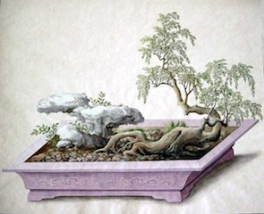

Historia del Bonsái
Aunque la palabra 'Bon-sai' es japonesa, el arte que describe tiene su origen en el imperio chino. Hacia el año 700 d.C. los chinos habían empezado el arte de 'pun-sai' utilizando técnicas especiales para cultivar árboles enanos en tiestos. Originalmente sólo la elite de la sociedad practicaba ‘pun-tsai’ empleando especímenes autóctonos recolectados de la naturaleza, árboles que después eran enviados por toda China como lujosos regalos.
Durante el período Kamakura, período en el que Japón adoptó la mayoría de marcas culturales de China, el arte del cultivo de árboles en contenedor se introdujo en Japón. El pueblo japonés desarrolló el Bonsái siguiendo la influencia del budismo Zen y condicionado por el hecho de que Japón es sólo un 4% del tamaño de la China continental, por tanto la gama de formas de paisaje es mucho más limitada. Muchas de las técnicas conocidas, herramientas y estilos fueron desarrollados en Japón a partir de los originales chinos. Aunque era conocido de manera limitada fuera de Asia desde hace tres siglos, sólo recientemente el Bonsái se ha extendido verdaderamente fuera de su tierra natal.
Historia del Bonsái en China
En los territorios ahora conocidos como China se fabrican cuencos poco profundos y tazones aplanados de barro –nombrados como “pen”, “pan” o pun”- desde hace más de 5000 años. Unos cientos de años después del inicio de su fabricación, durante el periodo de la edad del bronce china, este tipo de formas fueron unas de las elegidas para recrear en bronce objetos que se utilizaban en ceremonias religiosas o políticas. Hace aproximadamente 2500 años, la teoría china de los cinco elementos (agua, fuego, madera, metal y tierra) promovió el interés por las réplicas en miniatura. La recreación de una montaña, por ejemplo, a una escala reducida podría centrar a un estudiante en sus propiedades mágicas y tener acceso a ellas. Cuanto mayor fuese la calidad de las proporciones respecto al original mayor sería el potencial mágico en su interior. Unos doscientos años más tarde, durante el mandato del emperador Han, aumentaron las importaciones de nuevas especias e inciensos gracias a los nuevos lazos comerciales abiertos. Se creó un nuevo tipo de vasija, un quemador de incienso en forma de los picos de una montaña que se alzaba por encima de las olas y que simbolizaba la morada de los inmortales, la idea entonces popular de las míticas Islas de la Bendición. Inicialmente formados en bronce, bronce bruñido o cerámica, algunos de estos quemadores basados en pequeños platos alargados fueron usados para contener brasas o para contener agua y simbolizar un océano. Las tapas desmontables de estos quemadores a menudo estaban cubiertas de representaciones de estilizadas figuras legendarias escalando las paredes de colinas boscosas. Con la perforación de las tapas, el humo del incienso podía surgir de su interior hueco recreando las místicas nieblas de las montañas de tamaño real. Se cree que algunas de esas tapas posteriormente hechas de piedra podrían haber sido decoradas con líquenes o musgo enganchados, formando paisajes naturales en miniatura.
Del año 706 d.C. aproximadamente, provienen las pinturas de la tumba del Príncipe Zhang Huai que incluyen representaciones de dos damas de compañía ofreciendo paisajes de rocas en miniatura con pequeñas plantas en platos poco profundos. Éstas son las primeras descripciones escritas de estos pun wan (juguetes de bandeja). Como la creación y el cuidado de estas composiciones ya era algo complicado, fue necesario un avance de las técnicas relacionadas y tuvo lugar la maduración de este arte (pero la documentación de este hecho aún no ha sido descubierta).
Los primeros árboles recolectados de la naturaleza y, a continuación, cultivados en contenedores se cree que fueron aquellos con formas peculiares y retorcidas modeladas de forma natural. Estos fueron denominados "sagrados" en oposición al término "profano" porque dichos árboles no podían utilizarse para fines prácticos y ordinarios como para obtener madera. Sus formas grotescas eran reminiscencias de posturas de yoga que repetidamente dobladas sobre sí mismas, provocan la recirculación de los fluidos vitales que se dice que alargan la vida.
A lo largo de los siglos se desarrollaron diferentes estilos en las diversas regiones, algo lógico en un país tan grande, con sus muchos y variados paisajes; los cuencos de cerámica y loza expuestos sobre madera reemplazaron a los de porcelana, y se hicieron intentos de dar forma a los árboles empleando estructuras de bambú, alambre de latón o tiras de plomo. Muchos poetas y escritores realizaron obras que incluían una descripción de un árbol o de paisajes montañosos en miniatura, y muchos pintores incluyeron un árbol enano en maceta como un símbolo del estilo de vida de un hombre sabio. Con posterioridad al siglo XVI, estos fueron llamados pun tsai o "bandeja de sembrar". El término pun ching ("bandeja paisaje" ahora llamado penjing) realmente no entra en uso hasta el siglo XVII.

Paisaje en miniatura de Gothaer Penjing Album
Historia del Bonsái en Japón
Se cree que los primeros paisajes cultivados en bandejas fueron llevados desde China a Japón por lo menos mil doscientos años atrás (como recuerdos religiosos). Pertenece al siglo X el siguiente pasaje literario japonés en que se alude a la idea de modificar la forma de un árbol para hacerla parecer atractiva a los hombres: “un árbol que se deja crecer salvaje en su estado natural es como algo crudo, un diamante en bruto. Es solo cuando permanece cerca de las personas que con mimo lo modifican dándole una forma y un estilo cuando adquiere la capacidad de conmovernos”.
Los primeros de estos paisajes hechos en Japón se formaron hace unos ochocientos años. Todas las cosas chinas fascinaron a los japoneses, y en algún momento el budismo chino Chan (el budismo Dyhana practicado en India cruzado con taoísmo chino nativo) también fue importado y se convirtió en Japón en el llamado budismo Zen. Buscando la belleza en la severa austeridad, los monjes Zen –caracterizados por un menor número de formas terrestres– desarrollaron sus paisajes empleando ciertas normas para que un solo árbol en una maceta pudiese representar el universo. Las macetas japonesas fueron generalmente más profundas que las del continente, y la forma de jardinería resultante fue llamada hachi-no-ki, literalmente, árbol de la taza. Un cuento de finales del siglo XIV, habla sobre un samurai arruinado que en una noche fría de invierno sacrificó sus tres últimos árboles enanos plantados en maceta para proporcionar calor a un monje viajero, y se convirtió en una popular obra de teatro Noh, pudiéndose encontrar a través de los siglos grabados relacionados con esta historia.

Bonsai "Akirafutokoro Prince" (706 AD), Ritsumeikan University